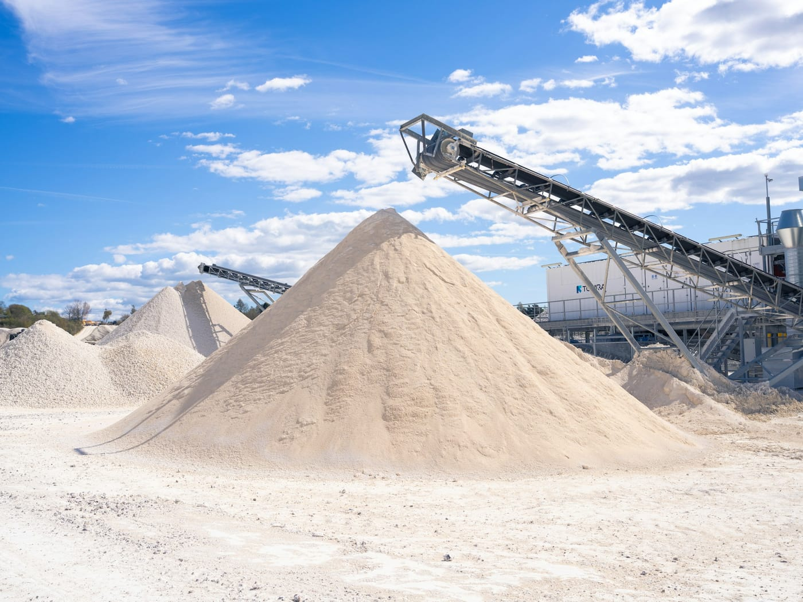

STEP 01
골재 준비
크기별로 나눈 쇄석 골재를 준비합니다. 도로의 뼈대가 되는 재료입니다.
(주)인우아스콘은 부산 강서구에서 아스팔트 콘크리트를 제조하는 기업입니다.
골재와 아스팔트를 가열·혼합해 도로 포장에 쓰이는 아스콘을 만듭니다.

(주)인우아스콘은 1987년 설립되어 부산광역시 강서구에서 아스팔트 콘크리트 및 혼합제품을 제조하는 법인입니다.
아스콘은 골재와 아스팔트를 가열해 섞어 만드는 포장 재료입니다. 일반적인 제조 과정을 안내합니다.
크기별로 나눈 쇄석 골재를 준비합니다. 도로의 뼈대가 되는 재료입니다.

골재를 건조·가열한 뒤 아스팔트와 채움재를 정해진 비율로 섞습니다.

뜨거운 상태의 혼합물을 현장으로 보내 깔고 다져 도로를 완성합니다.